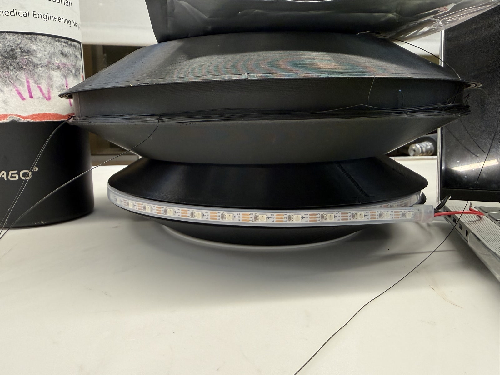
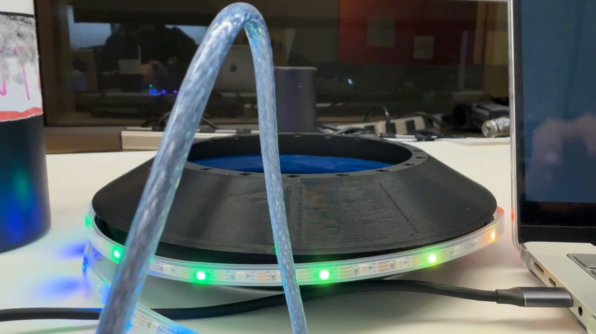

Tron Disc
I started this personal project in Fall 2024 after getting into Tron: Legacy and then watching the original Tron. The disc was a fun proof of concept and a good way to learn Fusion 360. The videos show the lights running, and the photos show the printed parts on my workbench.
LED lighting test on the printed disc
Design and build
The prototype uses PLA printed parts and NeoPixel LEDs. The Mark 5 CAD model, printed disc parts, and RGB strip document the build so far.
My contribution
I am doing this project myself: sourcing the components, buying the LEDs, designing the disc and its 3D-printed enclosure, and assembling the prototype.
Iterations and what I learned
CAD timeline management was one of the challenges. I also had to change the angles and overall footprint so the design would work with the 3D printer. Working through those changes helped me learn Fusion 360 while making something I wanted to build.
Build status and next steps
The bare disc model and RGB lighting prototype are in place. Next, I want to verify that the magnets can support the disc’s weight, then brainstorm and model the remaining enclosure. The magnetic support has not been verified yet.
Inspiration
Inspired by Tron: Legacy and the original Tron film. This is my own personal CAD and fabrication project.
Tron Disc Mark 5 in 3D
Loading model. Drag to rotate and scroll to zoom.
Close-up of the LED strip animation

